Orbro — Establishment of Design System
This project involved defining the design concepts for the location-based digital twin platform, Orbro, and building the corresponding design patterns and system. This design system is continually being updated and improved, facilitating communication among designers, developers, and all team members involved in the product.
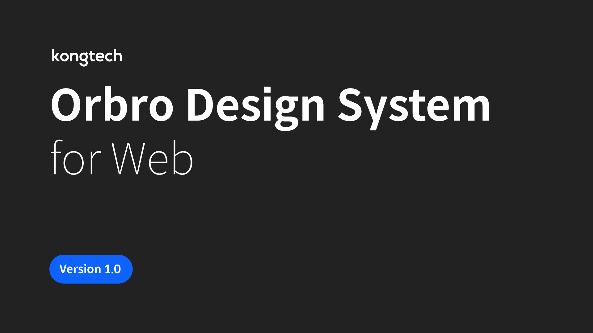
Design Principles as the Basis of the System
Before establishing the design system, we understood the Orbro service environment and defined design principles to respond to it. These design principles served as a basis for decision-making during the design system's construction and helped establish Orbro's unique design philosophy.
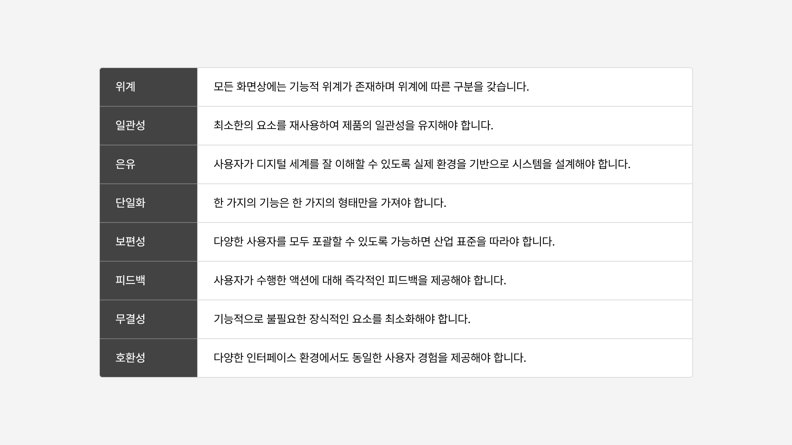
Functional Definition of Components
We selected design components used in the current service based on high reusability criteria and redefined their functions. We analyzed and organized each component according to its variations (Variant), anatomy (Anatomy), and state (State).
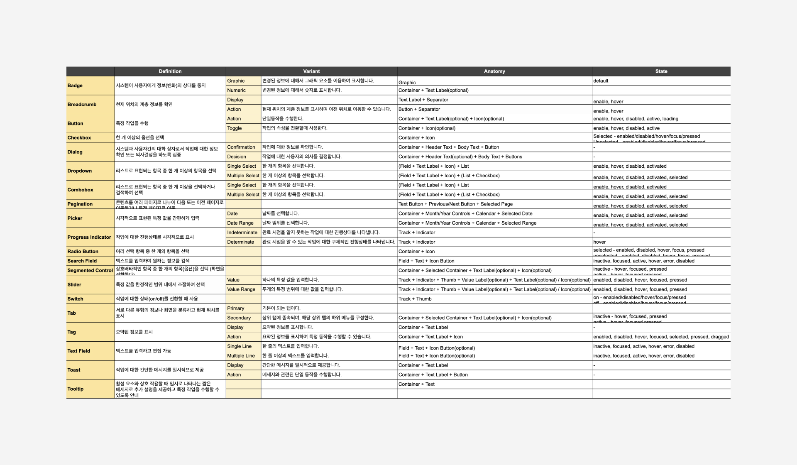
Component UX Guidelines
In previous design work, the same component was often used for different functions or different components were used in similar situations, compromising service consistency. To address this, we specified the functional definitions of all components, documented their usage, variations, and considerations, and created UX guidelines.
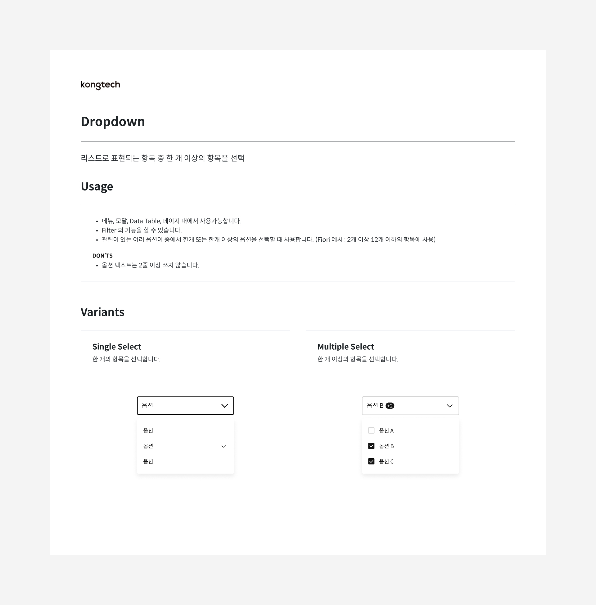
Component Usage, Variants
Component UI Guidelines
With multiple designers working on the team, there were instances where the same component was designed differently or appeared differently in various situations, reducing service consistency and development efficiency. To resolve this, we defined the interface components and appearance of all components and documented their expressions for various situations.
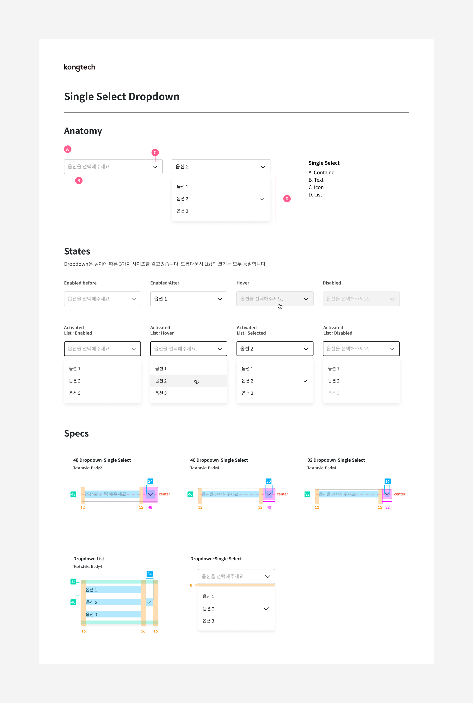
Component Anatomy, States, Specs
Typography Optimized for Data
Orbro's previous font system used 'Noto Sans CJK KR' for web and Android environments and 'Apple SD Gothic Neo' for iOS. Using two different fonts required double the work and constant adjustment for layout changes due to slight font differences, decreasing team productivity. To solve this, we decided to unify the fonts.
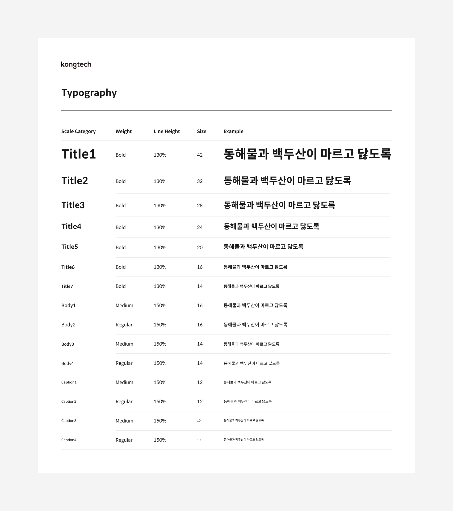
Typography Organization
Thus, Orbro's new font system uses 'Spoqa Han Sans Neo'. This font is free for commercial use and provides consistent usability across web, mobile (iOS/Android) environments. Additionally, it offers excellent readability, especially for numerical data, which is frequently used in the service. Typography was categorized into 'Title', 'Body', 'Caption' based on usage, and organized by size and weight, then documented.
Color System and Semantic Color Tokens
We defined and organized the main colors (Gray and Blue) and supplementary colors (Red, Orange, Yellow, Green, Teal, Light Blue, Indigo, Purple) used in the system into a color palette based on brightness. Frequently repeated colors in design work were selected and documented as semantic color tokens along with their usage purposes.
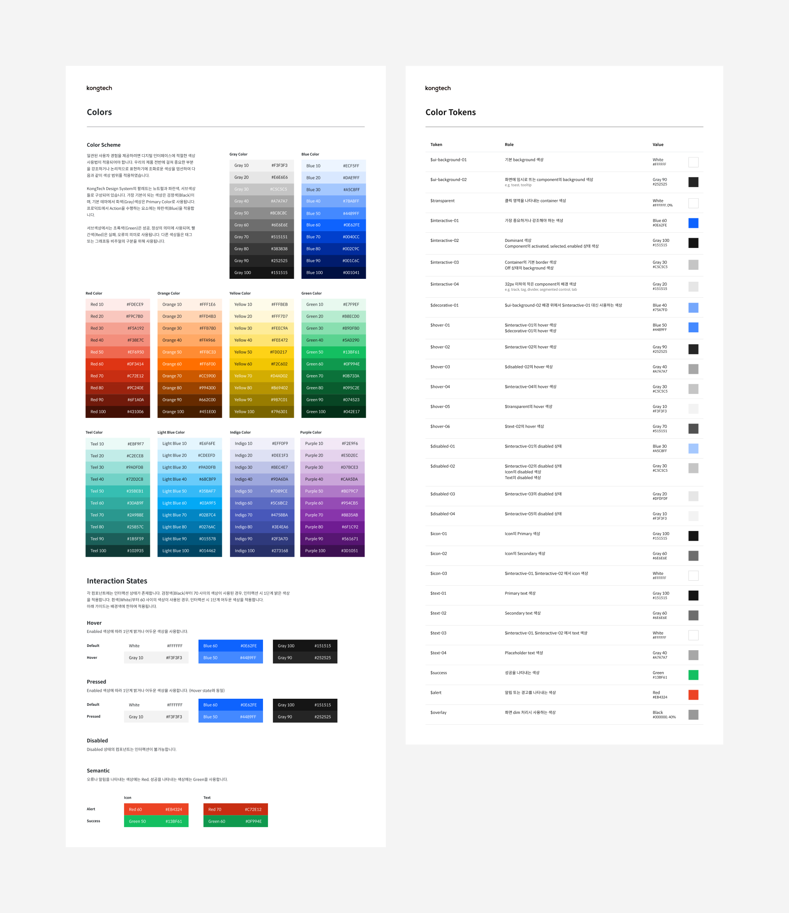
Icons Representing the Brand
Icons used in the design system were designed in collaboration with a BX designer, considering the overall branding of the service. Icons were categorized into five types: Arrow, UI, Object, Status, and System. Designed following the defined design principles, they are simple, effectively convey meaning, and represent the brand concept.
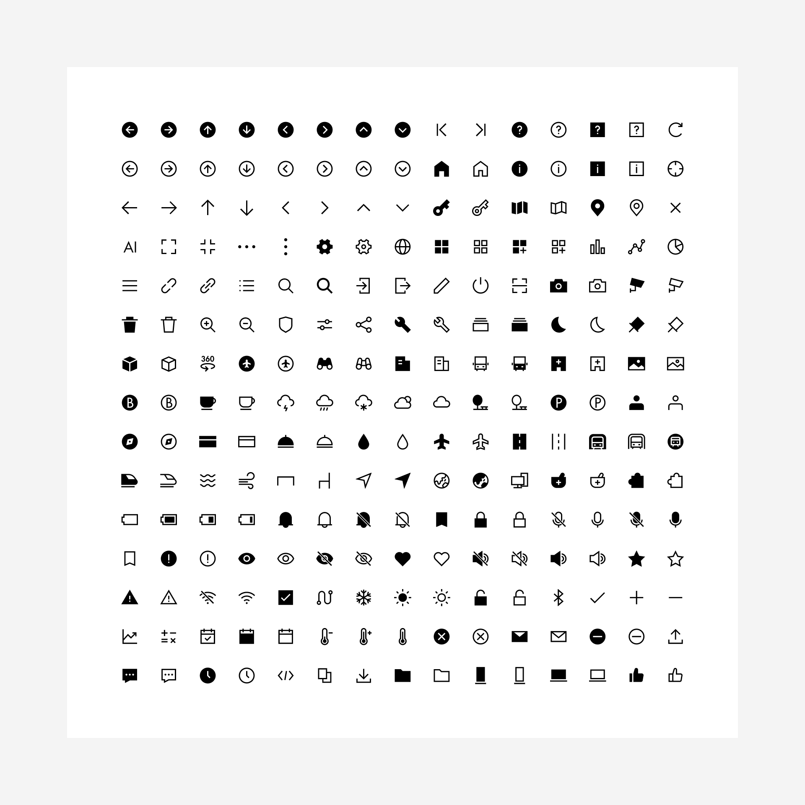
Responsive Layouts Considering Data Types
We established a 4px grid system and a 16-column layout grid for consistent service design. This layout accommodates card-shaped responsive designs when resizing the browser and provides guidelines for data tables and graph representations.
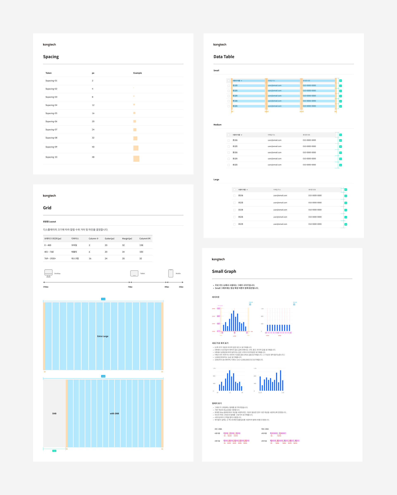
System Assetization for Efficient Design Work
We organized all design system elements—components, typography, colors, icons—into assets in the Figma working environment. These assets allowed all designers on the team to quickly use the same design elements when needed, significantly improving design work efficiency.
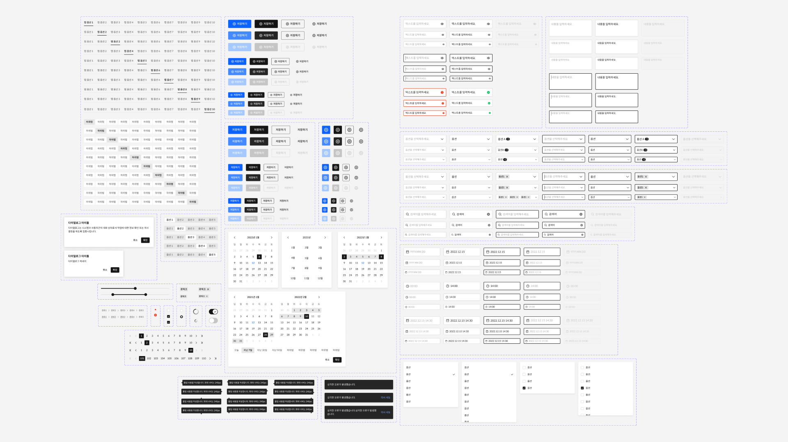
System Library for Efficient Development Work
We shared the assets and documents of the design system with the development team, allowing them to understand the system's concepts and context. Organizing it as a development library also increased efficiency in the development process.
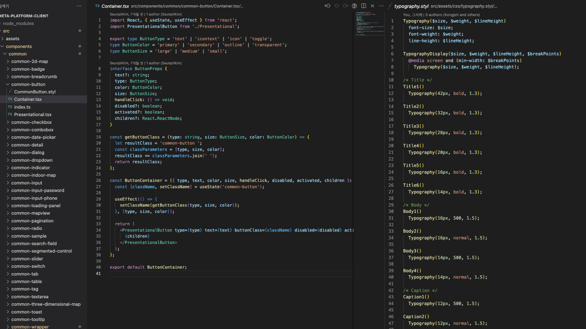
Reflections on Establishing the Design System
Opportunity to Understand Overall UI
Establishing the design system provided a valuable opportunity to understand the functions and roles of UI components and the contexts in which they are used. This understanding helped clarify ambiguous aspects of the design process and reduce unnecessary considerations.
Organization-Wide Understanding and Agreement on the Product
Collaborating with various teams on the project allowed us to understand how the elements built into the design system were implemented and impacted the service, fostering organization-wide understanding and continuous communication to suggest better directions for the system.
Need for Continuous Improvement
As the design system was built early in the service development and alongside service design, there were discrepancies between the service and the system as the project progressed. To resolve this, we continuously identify and improve system issues during the design process through discussions and collaboration.
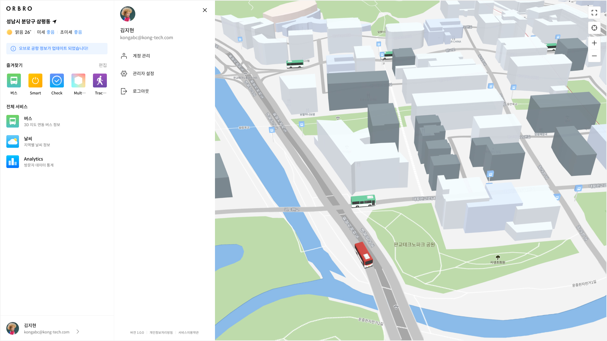
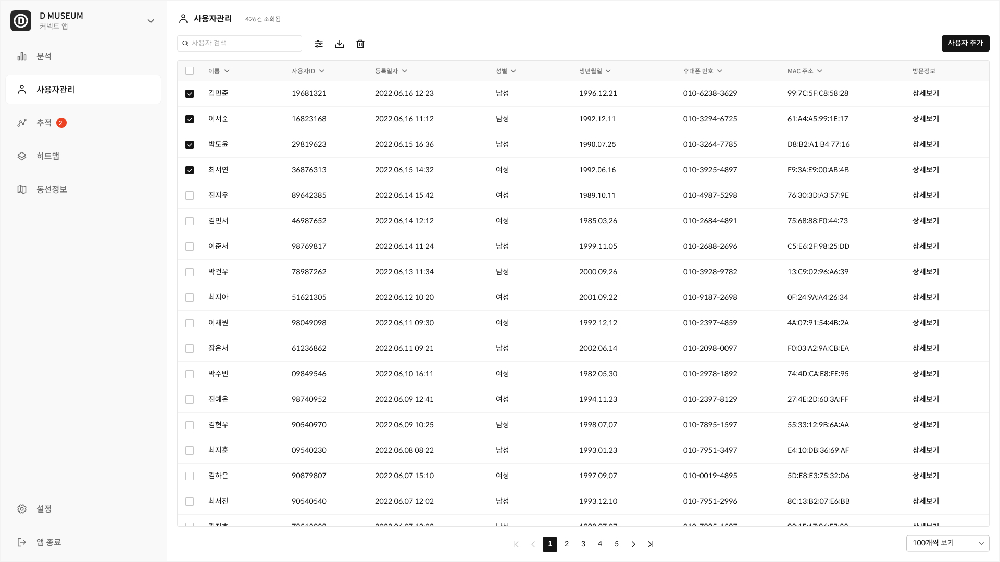
Screen Applying the Design System